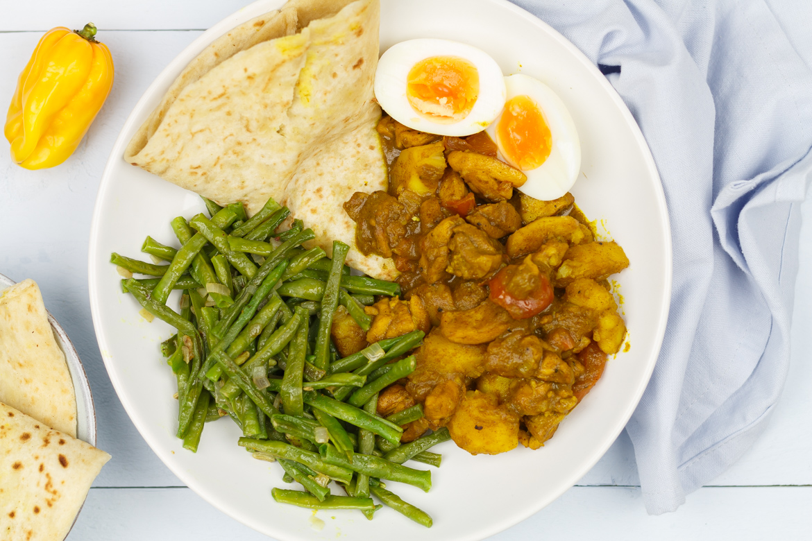

Roti

Description
Roti is a dish from Surinam that has become very popular in The Netherlands. It combines
elements from several different kitchens around the world to make a varied and tasteful meal.
Ingredients
- 1 cup flour
- 2 tbsp oil
- 4 tbsp water
- 4 eggs
- 0.5kg potatoes
- Masala spices
- 1 onion
- 1 tomato
- 1 clove garlic
Steps
- Combine flour, oil and water into a soft dough and let rest for 1 hour
- Boil eggs and potato for 10-15 minutes
- Finely chop onion, tomato and garlic
- fry onion in oil until translucent
- add tomato, garlic and masala spices
- add potato and eggs and let it boil for 15-20 min
- divide the dough in 4-6 equal pieces
- roll into a small pancake
- Bake the pancake on a hot stove